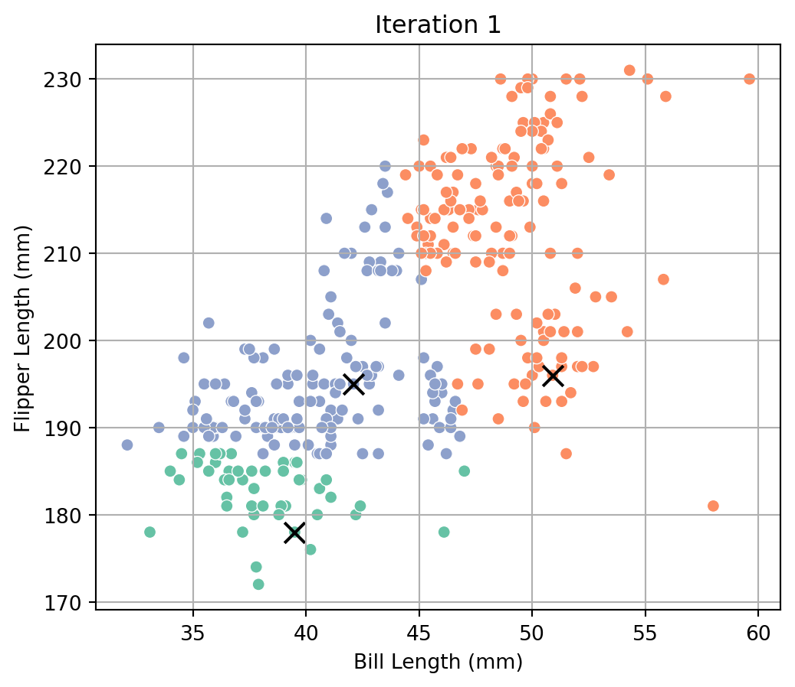
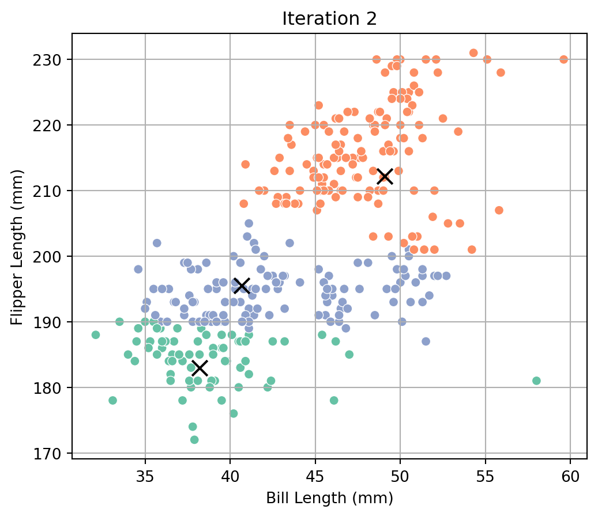
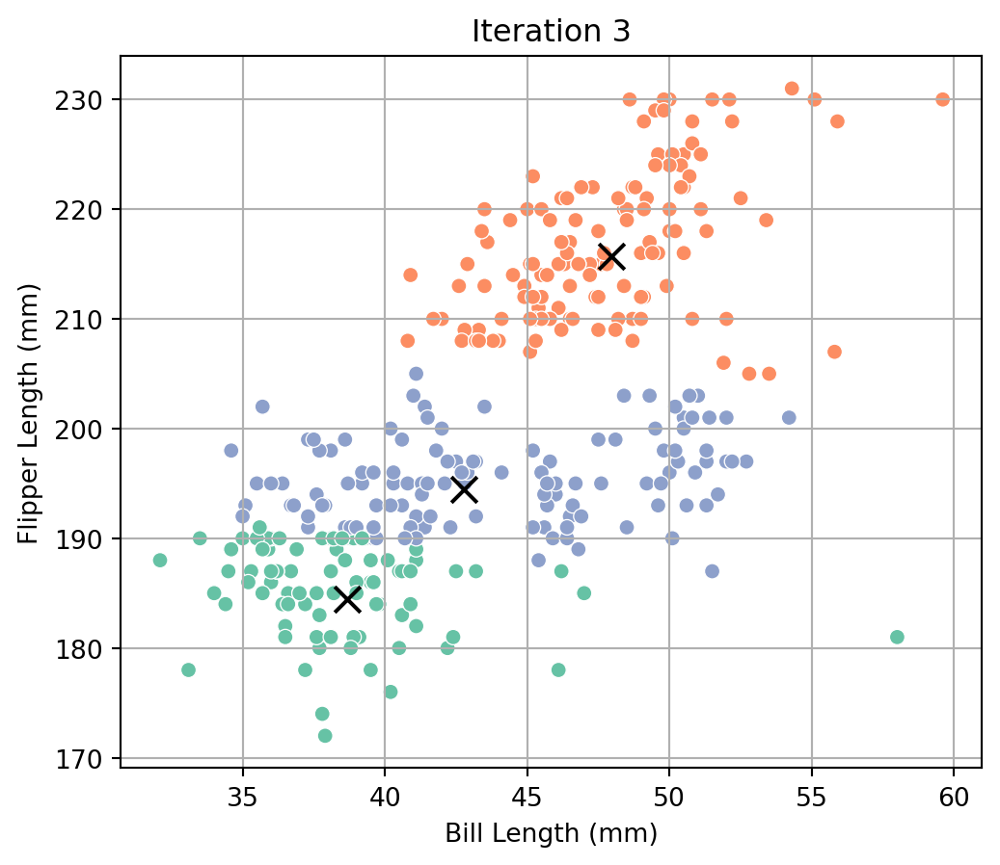
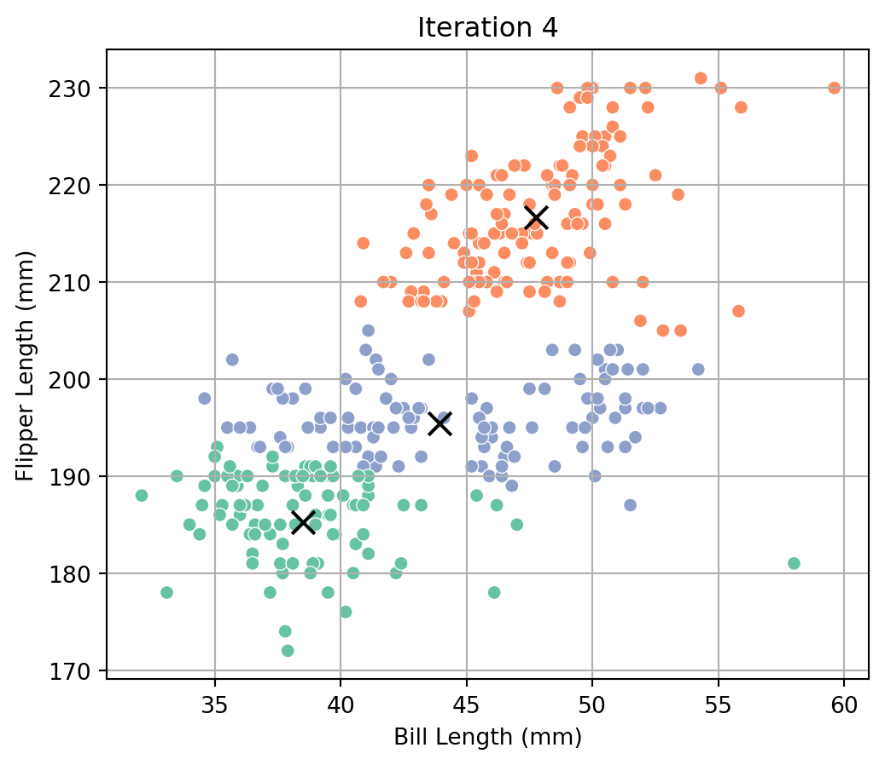
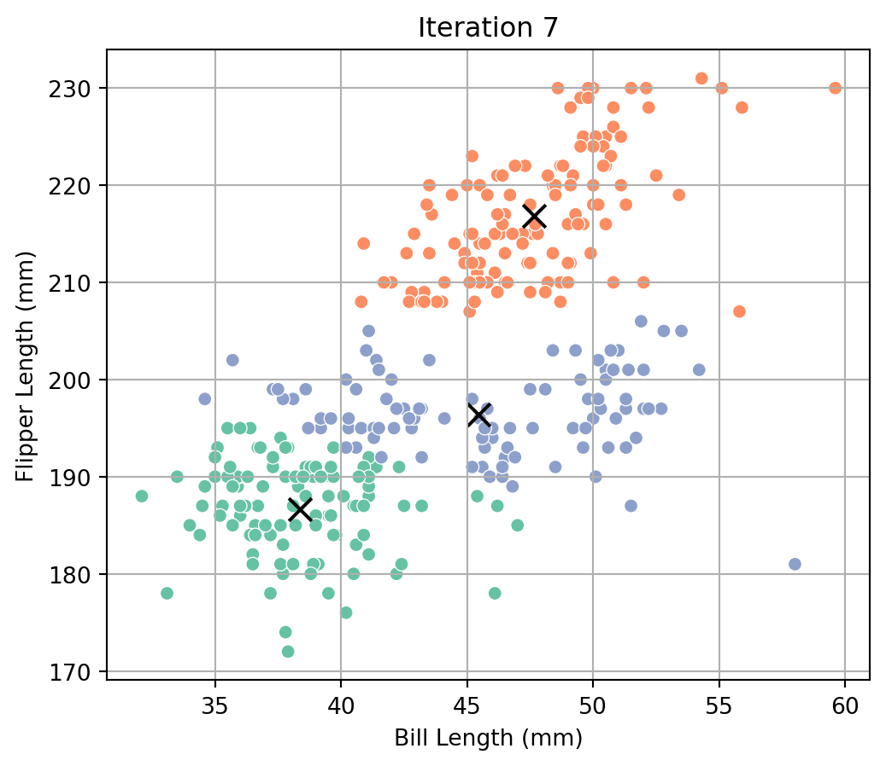
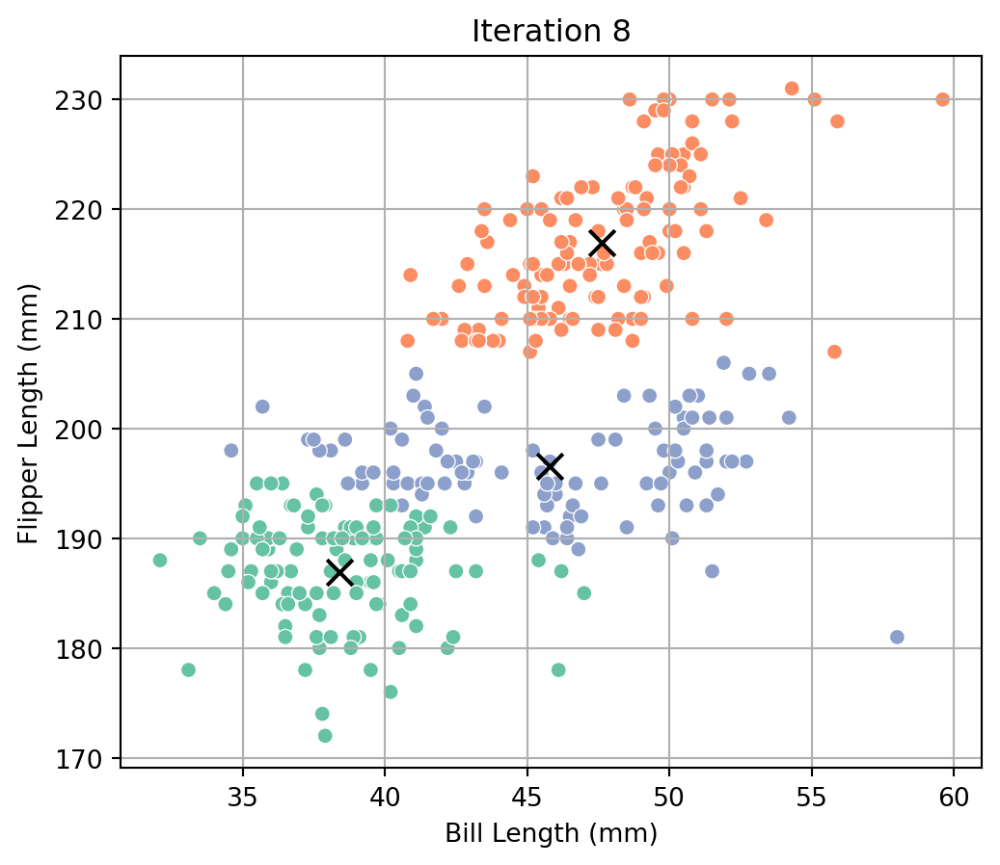
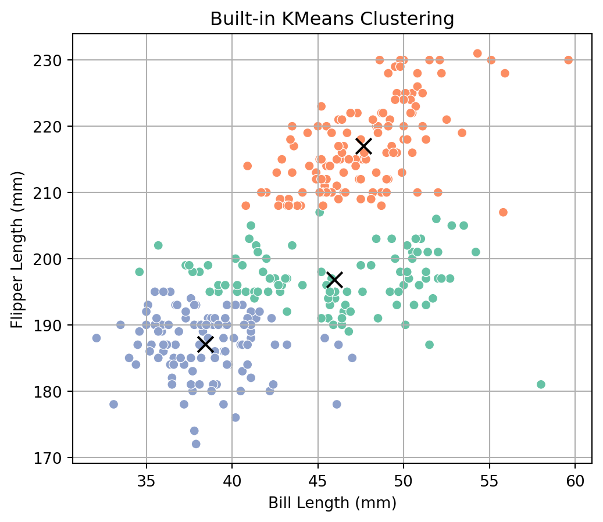
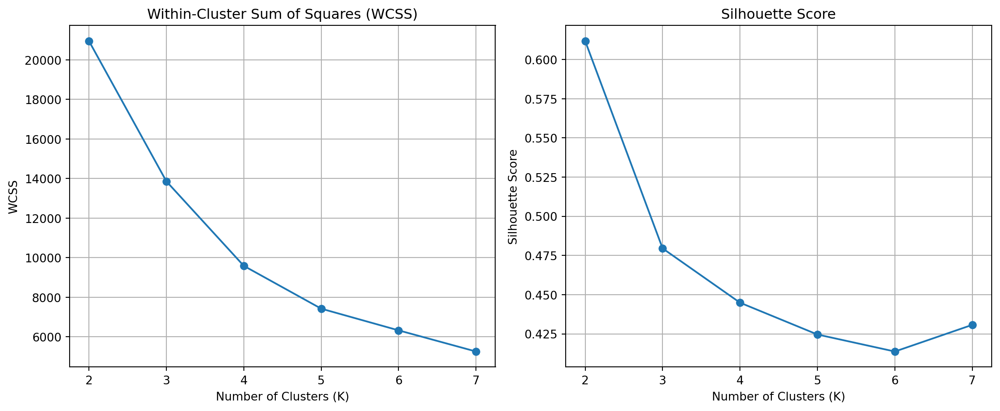
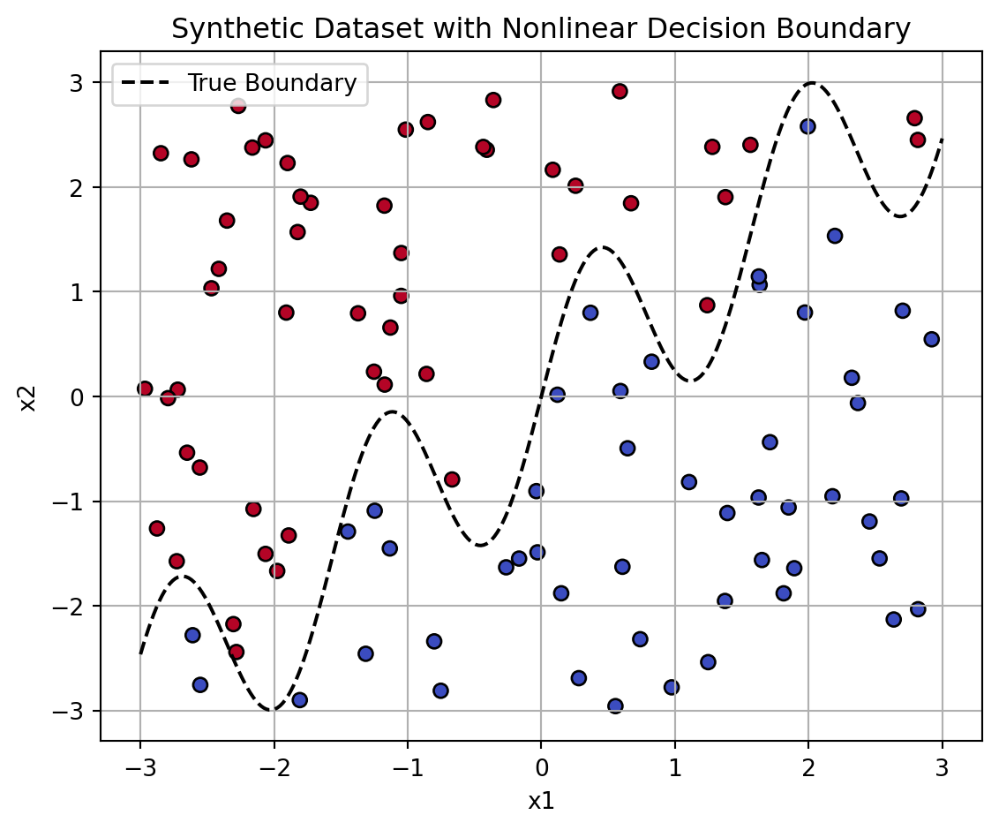
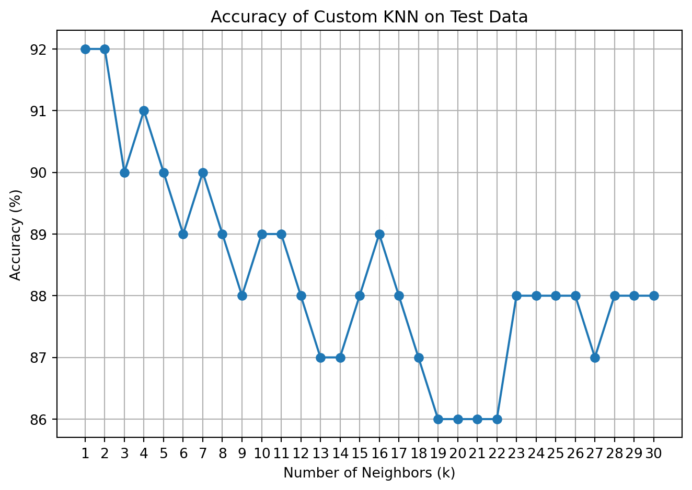

df = pd.read_csv("palmer_penguins.csv").dropna()
data = df[["bill_length_mm", "flipper_length_mm"]].to_numpy()
def plot_clusters(data, labels, centroids, title):
plt.figure(figsize=(6, 5))
sns.scatterplot(x=data[:, 0], y=data[:, 1], hue=labels, palette="Set2", legend=False)
plt.scatter(centroids[:, 0], centroids[:, 1], c='black', marker='x', s=100)
plt.title(title)
plt.xlabel("Bill Length (mm)")
plt.ylabel("Flipper Length (mm)")
plt.grid(True)
plt.show()
def custom_kmeans(data, k=3, max_iter=10, seed=42):
np.random.seed(seed)
idx = np.random.choice(len(data), size=k, replace=False)
centroids = data[idx, :]
for i in range(max_iter):
distances = np.linalg.norm(data[:, np.newaxis] - centroids, axis=2)
labels = np.argmin(distances, axis=1)
plot_clusters(data, labels, centroids, f"Iteration {i+1}")
new_centroids = np.array([data[labels == j].mean(axis=0) for j in range(k)])
if np.allclose(new_centroids, centroids):
break
centroids = new_centroids
return labels, centroidsAdd Title
Unsupervised ML: Custom K-Means Clustering on Palmer Penguins
Overview
In this section, I implement the K-Means clustering algorithm from scratch and apply it to the Palmer Penguins dataset. The goal is to understand and visualize how the algorithm iteratively groups data points into clusters based on similarity.
We focus on two numeric variables:
• Bill Length (mm)
• Flipper Length (mm)This two-dimensional feature space allows for a clear visualization of the clustering process.
Algorithm Description
K-Means aims to partition data into K distinct clusters such that the within-cluster variance is minimized. The algorithm proceeds through the following steps:
Initialization: Randomly choose K data points as the initial centroids.
Assignment: Assign each point to the cluster whose centroid is closest (measured by Euclidean distance).
Update: Compute the new centroids as the mean of the points assigned to each cluster.
Repeat: Repeat steps 2 and 3 until the assignments stop changing or a maximum number of iterations is reached.
Implementation Code
Results from Custom K-Means
labels_custom, centroids_custom = custom_kmeans(data, k=3)





The plots show how the centroids and assignments change through iterations. The process stabilizes when assignments no longer shift.
Comparison to Built-In KMeans
model = KMeans(n_clusters=3, n_init=10, random_state=42)
labels_builtin = model.fit_predict(data)
centroids_builtin = model.cluster_centers_
plot_clusters(data, labels_builtin, centroids_builtin, "Built-in KMeans Clustering")
The built-in version produces a similar cluster structure. This confirms that our custom implementation is functioning correctly.
Conclusion
The custom implementation of K-Means successfully segments the penguin data using only two features. Observing the iterative updates provides insight into how the algorithm refines its clusters over time. Comparison with the built-in function helps validate the result.
Evaluating Cluster Count: WCSS and Silhouette Score
To determine the optimal number of clusters, I used two common metrics:
Within-Cluster Sum of Squares (WCSS): Measures compactness of clusters. Lower values are better but always decrease with more clusters.
Silhouette Score: Measures how well each point fits within its cluster versus the nearest other cluster. Ranges from -1 to 1. Higher values are better.
The analysis was run for K = 2 through 7:
data = df[["bill_length_mm", "flipper_length_mm"]].to_numpy()
wcss = []
silhouette_scores = []
for k in range(2, 8):
model = KMeans(n_clusters=k, n_init=10, random_state=42)
labels = model.fit_predict(data)
wcss.append(model.inertia_)
silhouette_scores.append(silhouette_score(data, labels))
fig, ax = plt.subplots(1, 2, figsize=(12, 5))
ax[0].plot(range(2, 8), wcss, marker='o')
ax[0].set_title("Within-Cluster Sum of Squares (WCSS)")
ax[0].set_xlabel("Number of Clusters (K)")
ax[0].set_ylabel("WCSS")
ax[0].grid(True)
ax[1].plot(range(2, 8), silhouette_scores, marker='o')
ax[1].set_title("Silhouette Score")
ax[1].set_xlabel("Number of Clusters (K)")
ax[1].set_ylabel("Silhouette Score")
ax[1].grid(True)
plt.tight_layout()
plt.show()
Interpretation
WCSS declines rapidly and begins to flatten after K = 3 or 4.
Silhouette Score is highest at K = 2, suggesting well-separated clusters at that level.
While the silhouette method suggests K = 2 as best, WCSS shows diminishing returns starting at K = 3. Either can be justified, but for visual interpretability and potential biological alignment (e.g., penguin species), K = 3 remains a reasonable choice.
Supervised ML: K-Nearest Neighbors — Synthetic Data Generation and Visualization
To illustrate how the K-Nearest Neighbors algorithm handles non-linear boundaries, we create a synthetic dataset with two features, x1 and x2. The outcome variable y is binary and depends on whether x2 lies above a non-linear “wiggly” boundary defined by the function sin(4 * x1) + x1.
np.random.seed(42)
n = 100
# Generate feature values
x1 = np.random.uniform(-3, 3, n)
x2 = np.random.uniform(-3, 3, n)
# Define the boundary and assign class labels
boundary = np.sin(4 * x1) + x1
y = (x2 > boundary).astype(int)
# Assemble the dataset
dat = pd.DataFrame({'x1': x1, 'x2': x2, 'y': y})
# Plot the data with class coloring and boundary
plt.figure(figsize=(6, 5))
plt.scatter(dat['x1'], dat['x2'], c=dat['y'], cmap='coolwarm', edgecolor='k')
x_vals = np.linspace(-3, 3, 300)
plt.plot(x_vals, np.sin(4 * x_vals) + x_vals, color='black', linestyle='--', label='True Boundary')
plt.xlabel('x1')
plt.ylabel('x2')
plt.title('Synthetic Dataset with Nonlinear Decision Boundary')
plt.legend()
plt.grid(True)
plt.tight_layout()
plt.show()
Supervised ML: K-Nearest Neighbors — Classification Accuracy by k
Test Set Generation
We generate a new test dataset using the same logic as before, but with a different random seed. This ensures the test set is independent of the training data.
np.random.seed(99)
x1_test = np.random.uniform(-3, 3, 100)
x2_test = np.random.uniform(-3, 3, 100)
boundary_test = np.sin(4 * x1_test) + x1_test
y_test = (x2_test > boundary_test).astype(int)
test_data = pd.DataFrame({'x1': x1_test, 'x2': x2_test, 'y': y_test})Custom KNN Implementation
Below is a hand-coded implementation of the K-Nearest Neighbors classifier. For each test point, we compute its distance to all training points, find the k nearest ones, and predict the most common label.
def custom_knn(X_train, y_train, X_test, k):
predictions = []
for x in X_test:
distances = np.linalg.norm(X_train - x, axis=1)
nearest_indices = np.argsort(distances)[:k]
nearest_labels = y_train[nearest_indices]
pred = np.round(np.mean(nearest_labels)).astype(int)
predictions.append(pred)
return np.array(predictions)We also validate this function by comparing it to the result of sklearn’s built-in KNN classifier.
Model Evaluation and Accuracy Plot
We run our custom KNN for k = 1 through k = 30 and record the accuracy on the test dataset. The plot below shows accuracy (as a percentage) vs. the number of neighbors.
from sklearn.neighbors import KNeighborsClassifier
from sklearn.metrics import accuracy_score
X_train = dat[["x1", "x2"]].to_numpy()
y_train = dat["y"].to_numpy()
X_test = test_data[["x1", "x2"]].to_numpy()
y_test = test_data["y"].to_numpy()
k_values = range(1, 31)
accuracy_custom = []
for k in k_values:
y_pred_custom = custom_knn(X_train, y_train, X_test, k)
acc = accuracy_score(y_test, y_pred_custom)
accuracy_custom.append(acc)
plt.figure(figsize=(7, 5))
plt.plot(k_values, [acc * 100 for acc in accuracy_custom], marker='o')
plt.title("Accuracy of Custom KNN on Test Data")
plt.xlabel("Number of Neighbors (k)")
plt.ylabel("Accuracy (%)")
plt.xticks(k_values)
plt.grid(True)
plt.tight_layout()
plt.show()
Optimal k
The highest classification accuracy is 92%, achieved when k = 1. This reflects the fact that KNN with small k values can closely trace local structure—although it can overfit. In this particular synthetic problem with a clean boundary and well-separated classes, k = 1 performs best.
Conclusion
This project explored both unsupervised and supervised machine learning techniques through hands-on implementation and visual analysis. In the unsupervised section, I built a custom K-Means algorithm and applied it to the Palmer Penguins dataset, identifying meaningful clusters and validating them using WCSS and silhouette scores. The optimal number of clusters, suggested by these metrics, was between two and three, consistent with expectations for natural species groupings.
For the supervised portion, I implemented a custom K-Nearest Neighbors (KNN) classifier and evaluated its performance on a synthetic dataset with a non-linear decision boundary. The classifier was tested across different values of k, with accuracy peaking at k = 1, achieving 92% test accuracy. This demonstrates KNN’s strength in capturing complex local patterns, particularly in well-separated datasets.
Together, these exercises reinforced key ML concepts such as iterative optimization, cluster validation, non-parametric classification, and model evaluation, while emphasizing the importance of visual interpretation and experimental rigor.